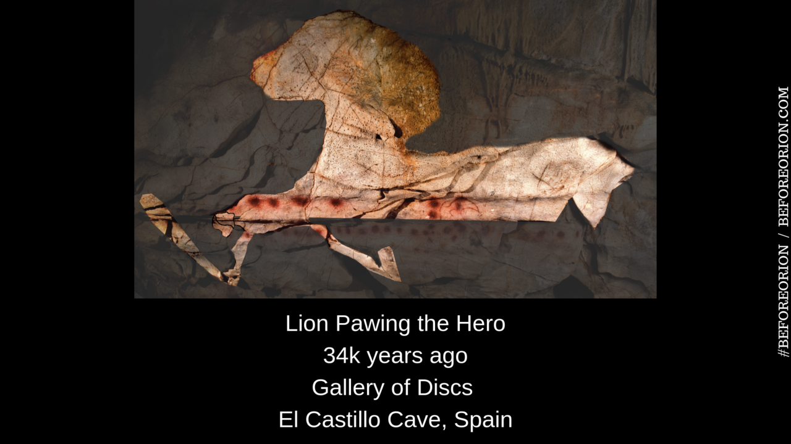
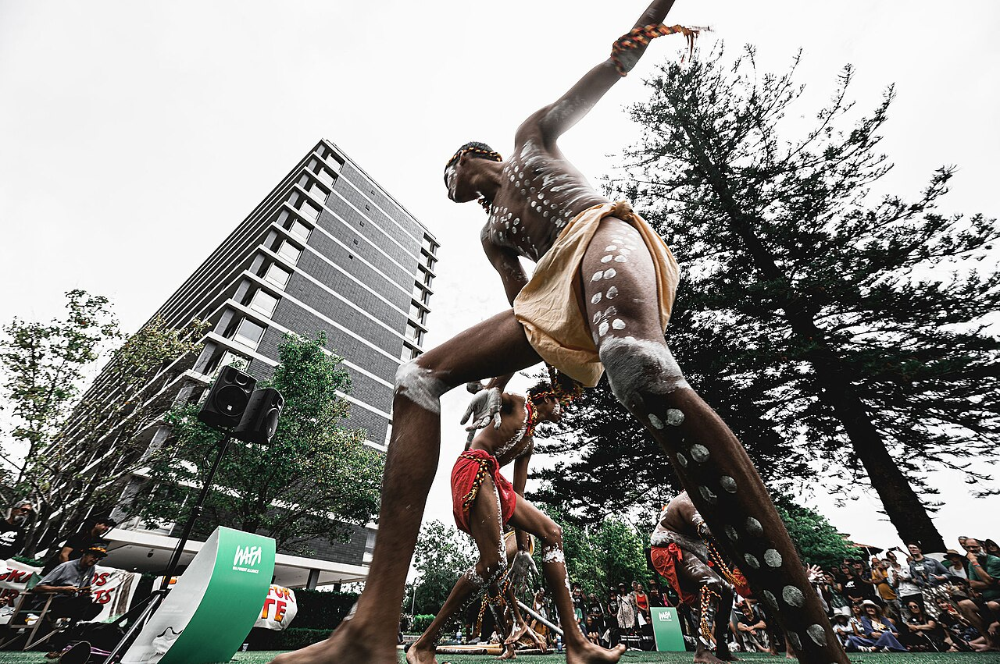
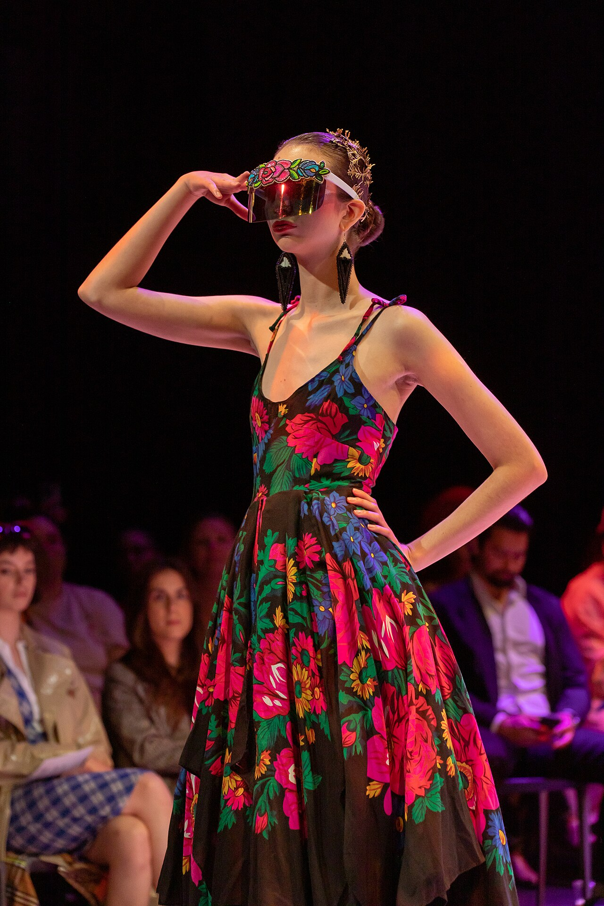

Art & Expressive Culture
No society has ever been found that does not sing, dance, decorate, or tell stories — and yet a great many societies have no word that means "art." That gap is the puzzle this chapter is built around. When anthropologists study expressive culture they are not ranking masterpieces; they are asking what a carved prowboard does to a trading partner, why a healing painting is destroyed before sundown, how a chin tattoo can be a genealogy, and what happens to a design when it moves from a ceremonial ground onto a canvas in a Sydney gallery. Art turns out to be one of the most efficient ways a culture has of talking to itself about itself — and one of the sharpest tools it has for drawing the line between us and them.
By the end of this chapter you can
- Explain why the Western category of fine art travels badly, and state an anthropological working definition of expressive culture.
- Apply the emic/etic distinction to aesthetics, using real systems of local art criticism.
- Describe at least five social functions of art with a specific ethnographic case for each.
- Summarize what ethnomusicology adds to the study of sound, using Merriam's three-part model.
- Explain oral-formulaic composition and why the Parry–Lord research reshaped how we read epic poetry.
- Analyze body art as a rite of passage using van Gennep and Turner, and distinguish permanent from temporary marking.
- Evaluate claims about authenticity, tourist art, and cultural appropriation without assuming that change equals loss.
- Connect art to ethnic boundaries, exchange systems, and political legitimation in bands, tribes, chiefdoms, and states.
Section 1What is art?

A word that does not translate
Start with an uncomfortable fact. The English word art carries a load of assumptions that are historically recent and geographically narrow: that art objects are made to be contemplated rather than used, that they are signed by an individual genius, that they belong in a museum behind a rope, and that they are separable from religion, politics, and work. That bundle congeals in Europe after the Renaissance and hardens in the eighteenth and nineteenth centuries with the rise of the public museum and the art market. Carry it into a Sepik men's house or a Diné healing ceremony and it distorts everything it touches.
Most of the world's languages have no term that maps onto it. The Yoruba of Nigeria, the Abelam of Papua New Guinea, and the Kwakwaka'wakw of the Northwest Coast all produce objects of staggering formal sophistication, and all of them have rich vocabularies for evaluating those objects — but the vocabularies are about skill, efficacy, propriety, ancestry, and effect, not about "art" as a category set apart from life. Anthropologists therefore prefer the broader phrase expressive culture: the whole field of humanly patterned, culturally valued making and doing — visual form, music, dance, verbal art, dress, body marking, festival, play.
A workable cross-cultural definition has four parts. Expressive culture involves (1) skill — it is made well, by a standard someone can articulate; (2) form — it is patterned, and the pattern is deliberate; (3) affect — it is meant to do something to whoever encounters it; and (4) evaluation — a community judges it, and the judgments are shared, teachable, and arguable. Notice what is missing: nothing here requires uselessness, individuality, or a frame.
Emic aesthetics: how other people criticize
Because judgment is the fourth criterion, the anthropologist's first job is emic — recovering the categories insiders actually use — before offering any etic comparison. The classic demonstration is Robert Farris Thompson's work on Yoruba art criticism, in which he sat with Yoruba connoisseurs and recorded the terms they used to praise and condemn carvings. What emerged was a coherent, teachable aesthetic: a sculpture should occupy a midpoint between blank abstraction and slavish lifelikeness; it should be visible and legible, with clear delineation of parts; it should have luminosity, a polished shine; it should be straight and upright; and above all it should show coolness — composure, controlled calm in the face. A Yoruba critic can tell you exactly why a head fails. That is criticism, and it is not ours.
Anthony Forge found something different again among the Abelam of Papua New Guinea, whose spectacular painted ceremonial house facades resist verbal explanation. When Forge asked what a painting meant, he was given no key and no code. His conclusion — in "Learning to See in New Guinea" — was that Abelam initiation does not teach meanings; it teaches seeing. The paintings communicate in a register that is not reducible to language, and the ability to be moved by them is itself the knowledge that initiation confers. Franz Boas had made a related argument in Primitive Art (1927): pleasure in form and mastery of technique are human universals, and the styles of any people can only be understood historically and internally — never as rungs on an evolutionary ladder.
Art as a technology of effect
Alfred Gell pushed the argument further. In his essay on the "technology of enchantment" and in Art and Agency (1998), Gell proposed that we stop asking what art objects mean and start asking what they do. His case study came from Bronislaw Malinowski's Trobriand material: the carved and painted prowboards on the ocean-going canoes of the kula ring. Those boards are not decoration. They are dazzle weapons. A Trobriander arrives on a distant island to negotiate the exchange of shell valuables, and the overwhelming, technically astonishing beauty of his canoe is designed to unsettle his partner's mind and loosen his grip on his armbands. The board works as magic works, and it works because its virtuosity looks superhuman. Art here is instrumental, embedded in a system of reciprocity — and utterly serious.
| Western fine-art assumption | Cross-cultural reality | Case |
|---|---|---|
| Art is for contemplation, not use | Most expressive objects are made to do work — heal, persuade, legitimate, protect | Kula prowboards; Diné sandpaintings |
| Art is permanent, to be preserved | Many forms are deliberately ephemeral or destroyed on schedule | Sandpainting dismantled by sunset |
| Art has a named individual creator | Authorship may be collective, ancestral, or inherited by descent | Northwest Coast crest designs |
| Art is separate from religion and politics | Expressive form is often the medium of religion and politics | Benin brass plaques; bisj poles |
| "Fine art" outranks "craft" | The hierarchy is a local Western folk category, not a universal | Textiles, pottery, tattoo |
The stakes of getting this wrong are not merely academic. Sally Price's Primitive Art in Civilized Places (1989) showed how museum labels routinely strip non-Western makers of their names, dates, and biographies — "Dan mask, wood, twentieth century" — while a European object of the same age is credited to an individual. James Clifford made a parallel case against the Museum of Modern Art's 1984 "Primitivism" exhibition, which paired African and Oceanic objects with Picasso and Giacometti to show "affinity," and in doing so erased the histories, functions, and colonial routes by which those objects had reached New York.
- The Western fine art category — useless, framed, individually authored — is historically specific and travels badly.
- Anthropologists use expressive culture: skilled, patterned, affecting making that a community evaluates.
- Emic aesthetics are real and teachable (Yoruba coolness and midpoint mimesis); Boas insisted styles be read historically, never as evolutionary stages.
- Gell's technology of enchantment reframes the question from what art means to what art does — kula prowboards as instruments of persuasion.
Section 2The functions of art

Why every culture makes something
The universality of expressive culture demands an explanation, and "people like pretty things" is not one. Clifford Geertz offered the sharpest formulation in "Art as a Cultural System": art is a way a community renders its own sensibility visible to itself. It is not a mirror held up to society and it is not a coded message with a single solution; it is a public form in which a people's feeling about experience gets shaped so that it can be shared, argued with, and passed on. On this view art is an instrument of local knowledge, and reading it requires the same thick description Geertz brought to a Balinese cockfight.
Underneath that general claim sit a set of concrete jobs that expressive culture does. Most objects and performances do several at once, which is exactly why the "art versus function" question is malformed.
| Function | What it accomplishes | Ethnographic case |
|---|---|---|
| Ritual efficacy | The object is the mechanism by which a ceremony works | Diné sandpainting: the patient sits on the image and the sand is pressed to the body |
| Social solidarity | Joint performance manufactures shared feeling | Mbuti molimo singing in the Ituri forest (Turnbull) |
| Status & rank | Display validates inherited position and wealth | Northwest Coast crest art displayed at the potlatch |
| Political legitimation | Dynastic history is fixed in durable form by a state | Benin brass plaques recording the Oba's court and campaigns |
| Socialization | Children absorb values, cosmology, and correct form | Abelam initiation as training in how to see |
| Land & title | Designs assert rights over territory and story | Australian Aboriginal Dreaming designs as evidence of country |
| Persuasion & exchange | Beauty is deployed as leverage in trade | Trobriand kula canoe prowboards |
| Mortuary work | The dead are honored, avenged, or released | Asmat bisj poles in coastal New Guinea |
Art that is meant to disappear
The Diné (Navajo) sandpainting, or iikaah, is the cleanest case against the museum model of art. Made inside the hogan by a singer (hataałii) and assistants during one of the Holyway curing chants — Nightway, Shootingway, Beautyway, Mountainway — it is built from colored sands, pollen, and crushed minerals trickled between the fingers into a precise, memorized design of Holy People, sacred plants, and directional guardians. The patient is seated on the finished image; portions of it are pressed against the body, transferring the power of the depicted beings inward and drawing the illness outward. Then the painting is dismantled, in reverse of the order it was made, and the sand is carried out before sunset. Nothing survives. The object was never the point — the event was.
The same logic runs through Tibetan Buddhist sand mandalas swept into a river, through the ephemeral flower and food constructions of Day of the Dead altars, and through the vast painted body designs that are washed off after a night's dancing. Permanence is a cultural preference, not a requirement.
Art, rank, and the politics of display
On the Northwest Coast of North America, expressive form is inseparable from political economy. Among the Tlingit and Haida, crest images — Raven, Eagle, Bear, Killer Whale — are property, held by lineages and transmitted through matrilineal descent. To carve a crest you are not entitled to is theft. These crests appear on house fronts, poles, chests, blankets, and masks, and they are validated in public at the potlatch, the great feast of redistribution in which a host gives away enormous quantities of goods and, in doing so, makes his lineage's claims stick in the memory of witnesses. Boas, working with George Hunt among the Kwakwaka'wakw, documented this system in extraordinary detail. The Canadian state understood the political weight of it perfectly well: an 1884 amendment to the Indian Act outlawed the potlatch, the ban stood in force from 1885 until it was dropped in 1951, and masks and regalia were confiscated — an attack on art as an attack on governance.
Contrast the scale. In a band — small, mobile, egalitarian — expressive culture tends to be portable, participatory, and unspecialized: everyone sings, and nobody owns a song by right of birth. In a tribe, a larger settled horticultural or pastoral society knit together by kin groups, age sets, and ceremonial exchange rather than by inherited office, expressive form can become monumental and technically specialized without becoming hereditary property — Abelam men raise towering painted ceremonial house facades and grow prize yams as competitive display, and the prestige earned that way builds a big-man's following rather than a lineage's estate. In a chiefdom like those of the Northwest Coast or Polynesia, art marks hereditary rank and underwrites redistribution. In a state such as the Kingdom of Benin, full-time guild artists working in brass produce an official visual record for a divine king. The complexity of the art system tracks the complexity of the political system that feeds it. Treat Elman Service's band–tribe–chiefdom–state sequence as a rough sorting device rather than a staircase every society climbs — but the correlation it points at is real.
- Geertz: art is a cultural system through which a community makes its own sensibility visible to itself.
- Expressive culture does concrete work — ritual efficacy, solidarity, rank, legitimation, socialization, land claims, exchange, mourning — usually several at once.
- Ephemeral forms like the Diné sandpainting show that permanence is a Western preference, not a property of art.
- Art scales with political organization: participatory in bands, monumental but not hereditary in tribes, rank-marking in chiefdoms, guild-produced and dynastic in states.
Section 3Performance

Music: sound, behavior, concept
Ethnomusicology is the anthropological study of music, and its founding insight is that you cannot understand a song by transcribing it. Alan Merriam's The Anthropology of Music (1964) proposed a three-part model — sound (the acoustic product), behavior (what performers physically and socially do), and concept (what people believe music is, where it comes from, who may make it) — with each level continuously feeding back into the others. Merriam also catalogued ten recurrent functions of music, among them emotional expression, symbolic representation, enforcement of conformity to social norms, validation of ritual and institutions, and the integration of society. Note how many of those are social rather than aesthetic.
John Blacking, who studied Venda children's songs and initiation music in South Africa, framed the universal claim in How Musical Is Man? (1973): music is "humanly organized sound," and there are no unmusical peoples — only societies that restrict who is permitted to perform. Steven Feld's Sound and Sentiment (1982) offers perhaps the finest single demonstration of what an anthropology of sound can achieve. Among the Kaluli of the Bosavi rainforest in Papua New Guinea, Feld traced a tight web linking birds, the dead, weeping, poetry, and song: birds are spirits of the dead, certain songs are built to make listeners weep by naming places along a path that evokes loss, and Kaluli people describe their layered, overlapping vocal texture with a term Feld translates as "lift-up-over-sounding" — a densely interlocking sound modeled on the forest itself. Emotion, ecology, cosmology, and musical form are one system.
Colin Turnbull's account of the Mbuti of the Ituri forest describes the molimo, a long trumpet and the ceremony surrounding it, sung night after night for a month or more when the forest has "gone bad" — typically after a death. Men sing through the night to wake the forest; the singing itself repairs the group. That is music functioning as social therapy in a small-scale band society where no one is a professional musician.
| Performance genre | What the analyst attends to | Landmark study |
|---|---|---|
| Music | Sound, behavior, and concept together; who may perform, and when | Merriam, The Anthropology of Music (1964) |
| Song & lament | How poetic form produces emotion; links to landscape and the dead | Feld, Sound and Sentiment (1982), Kaluli |
| Communal singing | Solidarity work; repair of the group after crisis | Turnbull on the Mbuti molimo |
| Dance & trance | Body technique, child-rearing, temperament, altered states | Mead & Bateson, Balinese Character (1942) |
| Ritual drama | Liminality, communitas, and the shape of social conflict | Turner, The Ritual Process (1969) |
| Epic singing | Composition in performance; formula, theme, variation | Lord, The Singer of Tales (1960), guslari |
| Praise & genealogy | Hereditary specialists; narrative as political precedent | Mande griot performance of Sunjata |
| Myth telling | Narrative as charter for land, rank, and rights | Malinowski, Myth in Primitive Psychology (1926) |
Dance, trance, and social drama
Dance is culturally encoded movement, and it is dense with information that the participants often cannot state in words. Margaret Mead and Gregory Bateson's Balinese Character (1942) — built from thousands of photographs and film sequences — examined how Balinese children were trained into a bodily style of controlled, unstartled composure, and how that same body could enter trance in the barong and rangda dramas, with performers pressing kris blades against their own chests. Body technique, child-rearing, temperament, and theater were treated as a single continuum.
Victor Turner supplied the theory that most performance analysis still runs on. Building on Arnold van Gennep's rites of passage — separation, liminality, incorporation — Turner argued in The Ritual Process (1969) that the liminal phase generates communitas, an intense, leveling, anti-structural bond among those passing through together. In From Ritual to Theatre (1982) he extended this to modern performance, distinguishing obligatory liminal ritual in small-scale societies from optional liminoid leisure genres — concerts, theater, sport — in industrial states. A rock festival and a Ndembu initiation are not the same thing, but they are recognizably related things.
Oral tradition and verbal art
Before writing, and alongside it, human societies stored their law, history, cosmology, and entertainment in trained memory. The most important twentieth-century discovery about how that works came from Milman Parry and Albert Lord, who went to the South Slavic highlands in the 1930s to record illiterate guslari — singers who performed epics of thousands of lines to a bowed lute. Lord's The Singer of Tales (1960) showed that these singers were not reciting memorized texts. They were composing in performance, assembling narrative from a stock of metrically fitted formulas and typical scenes. The same epic told twice differed in length and wording while remaining "the same song" to singer and audience. Because the Homeric poems are built from exactly such formulas — the wine-dark sea, swift-footed Achilles — the finding transformed classical scholarship: oral-formulaic composition is a technology, not a failure of literacy.
West Africa offers the living parallel. Among Mande peoples of Mali, Guinea, and neighboring states, griots (jeliw) are hereditary specialists in speech, praise, genealogy, and history, accompanying themselves on kora or ngoni. Their central repertoire includes the epic of Sunjata, founder of the Mali empire, a narrative that is simultaneously entertainment, dynastic charter, and a store of political precedent. Malinowski made the same point in Myth in Primitive Psychology (1926): Trobriand myth is not idle storytelling but a social charter — a justification of present rights in clan land and rank. Dell Hymes and the ethnopoetics movement later showed that Native American narratives collected as flat prose by earlier fieldworkers were in fact organized in lines, verses, and scenes, and that re-transcribing them recovered a poetic architecture the page had destroyed.
- Merriam's model reads music on three levels — sound, behavior, concept; Blacking's "humanly organized sound" denies any people is unmusical.
- Feld's Kaluli work links birds, weeping, poetics, and vocal texture into one cultural system of sound.
- van Gennep's rites of passage plus Turner's liminality and communitas remain the core framework for analyzing performance.
- Oral-formulaic composition (Parry and Lord) explains epic singing as composition-in-performance; griots and Trobriand myth show oral art functioning as charter and history.
Section 4Body art

The social skin
Terence Turner's essay "The Social Skin" (1980), written from fieldwork among the Kayapo of central Brazil, remains the best single statement of why body art matters. The skin, Turner argued, is the frontier between the individual organism and society, and every culture works that frontier. What is painted, pierced, cut, shaved, covered, or left bare is a continuously updated public statement of a person's age, gender, rank, marital status, ritual condition, and moral standing. Kayapo bodies were painted in black genipapo dye and red annatto in patterns that varied by life stage; infants were painted by their mothers in dense all-over designs, while adult men's designs grew simpler and bolder; lip discs and ear spools marked oratorical and social maturity. To be unpainted was not to be neutral. It was to be, in Turner's terms, socially unfinished.
This reframes body art away from "decoration." A body is a document. And unlike a document, it is always with you, always on display, and impossible to disclaim.
Permanent marks: tattoo and scarification
The English word tattoo is itself an artifact of the encounter between Europe and Oceania: it entered the language after Cook's Endeavour voyage reached Tahiti in 1769, from the Polynesian tatau. In Samoa the practice survives with unusual continuity. A master tattooist, the tufuga ta tatau, works with hand tools of bone or boar tusk struck with a mallet, applying the male pe'a — a dense field of pigment from waist to knees requiring many sessions over many days — and the finer female malu on the thighs. The pain is not incidental. Completion is public proof of endurance and of commitment to service of family and village; abandoning an unfinished pe'a is a lasting shame borne visibly for life.
Maori ta moko works differently again. Traditionally incised with a chisel (uhi) that grooved rather than merely punctured the skin, moko encodes whakapapa — genealogy — along with rank and tribal affiliation, with the face divided into zones carrying paternal and maternal information. Nineteenth-century colonization and missionization suppressed the practice, and moko became rare; since the late twentieth century it has been powerfully revived, with moko kauae, the women's chin moko, now worn publicly by Maori women as a deliberate assertion of identity and sovereignty.
Scarification — deliberate cutting or branding that heals into a raised keloid pattern — is widespread across Africa and parts of Melanesia. It is often explained by the observation that a design in relief reads clearly on darker skin, where inserted pigment would not; the explanation is partly right and wholly insufficient, since the societies in question could have tattooed and chose instead to be marked in a medium you can feel as well as see. E. E. Evans-Pritchard described the Nuer gaar of what is now South Sudan: six long horizontal cuts across the forehead, made at male initiation, converting boys into men in a single unmistakable and irreversible act. Paul Bohannan's 1956 study of the Tiv of Nigeria — "Beauty and Scarification amongst the Tiv" — made the crucial analytic point that fashions in scarification changed over time, that Tiv discussed them as beauty rather than as mere marking, and that the pain endured was itself part of what made the result beautiful. James Faris's Nuba Personal Art (1972) documented southeastern Nuba body painting keyed precisely to age grade and physical condition, where an ill-timed design was simply incorrect.
Read these through van Gennep and Turner and the pattern is clear. A permanent mark applied during the liminal phase of a rite of passage converts a temporary social transformation into a permanent, portable, unforgeable record of it. You cannot take the initiation off.
| Mode | Duration | Typical message | Ethnographic case |
|---|---|---|---|
| Tattoo | Permanent | Endurance, adulthood, genealogy, service | Samoan pe'a and malu; Maori ta moko |
| Scarification | Permanent | Initiation completed; ethnic and age-grade identity | Nuer gaar; Tiv beauty scars |
| Piercing / inserts | Semi-permanent | Oratorical standing, maturity, gender | Kayapo lip disc and ear spools |
| Body paint | Days | Ritual state, age grade, mourning, celebration | Kayapo genipapo designs; Nuba painting |
| Cosmetic / skin dressing | Daily | Beauty, health, ethnic belonging | Himba otjize of ochre and butterfat |
| Henna | A month or so | Celebration, marriage, blessing, festivity | Mehndi at South Asian and North African weddings |
| Dress & regalia | Occasion | Rank, ethnicity, ritual role, political claim | Maya huipil; Northwest Coast button blankets |
Temporary adornment and the ethnography of beauty
Impermanent marking does different work: it announces a current state rather than a completed transition. Himba women in northwestern Namibia apply otjize, a paste of red ochre and butterfat, daily to skin and hair — simultaneously cosmetic, protective against sun and insects, and an unmistakable statement of Himba identity. Maasai initiates pass the seclusion following circumcision in dark clothing with white chalk designs patterned across the face, publicly signaling that they are between statuses. Mehndi applied to a bride's hands and feet marks a threshold night, then fades over the following month as the new status settles.
Body art is also the fastest way to dislodge students' assumptions about gender and beauty. Among the Wodaabe, Fulani pastoralists of Niger, the yaake and geerewol dances feature young men in elaborate makeup — faces washed in pale yellow or red ochre, lips darkened and eyes lined with black kohl so that the teeth and eyes flash white, ostrich plumes rising above — who dance for hours in the sun, rolling their eyes and baring their teeth to display the valued traits of white eyes, white teeth, height, and a straight nose. Young women chosen for the role serve as judges. Every element of the Euro-American default — women adorn, men appraise — is reversed, and it is reversed by a fully coherent local aesthetic.
- Turner's social skin: the body's surface is a continuously updated public statement of age, gender, rank, and ritual state.
- Permanent marks (tattoo, scarification) typically certify completed rites of passage; temporary ones (paint, henna, ochre) announce current status.
- Samoan pe'a, Maori ta moko, Nuer gaar, and Tiv scars all tie beauty and validity to endured pain.
- Wodaabe geerewol inverts Euro-American gendered adornment — men display, women judge.
Section 5Art and identity

Style as a boundary
Fredrik Barth's Ethnic Groups and Boundaries (1969) reoriented the study of ethnicity around a simple reversal: what makes an ethnic group is not the cultural stuff it contains but the boundary it maintains, and boundaries are maintained by a small set of highly visible diacritical signs. Expressive culture supplies most of them — dress, textile pattern, hairstyle, musical genre, ornament. This is why a change of clothing can register as a change of allegiance, and why the diagnostic markers of an identity are so often things you can see across a market square.
Highland Guatemala illustrates both the beauty and the danger of the mechanism. Maya women's huipiles — woven on backstrap looms, with motifs, colors, and neckline forms specific to particular towns — historically allowed anyone to place a wearer's community at a glance. During the armed conflict of the late twentieth century, that same legibility made traje a liability: the garment that announced belonging also announced ethnicity to those hunting for it. Identity markers cut both ways.
And they are frequently newer than they claim. Eric Hobsbawm and Terence Ranger's The Invention of Tradition (1983) assembled cases in which practices asserted to be ancient turned out to have been assembled recently for political purposes — the clan-specific Scottish tartan system among them, largely elaborated in the eighteenth and nineteenth centuries and retrofitted onto Highland history. Calling a tradition invented is not an accusation of fraud. All traditions are made; the analytic question is when, by whom, and against what.
Markets, tourists, and the authenticity trap
Once expressive objects enter market exchange they change — in size, in medium, in subject, and in who makes them. Nelson Graburn's Ethnic and Tourist Arts (1976) established the field and pushed back against the reflexive dismissal of "airport art." Consider the range of what has happened:
- Guna molas (Panama): layered reverse-appliqué panels whose designs descend from body painting, moved onto blouse panels and then, for outside buyers, onto standalone framed pieces — while remaining central to Guna women's dress and household economy.
- Inuit printmaking at Kinngait (Cape Dorset): a printmaking and carving cooperative established in the mid-twentieth century became a major income source and produced internationally exhibited artists working in a medium that had no local precedent.
- Western Desert acrylics: at Papunya in 1971, senior men began transferring ceremonial ground and body designs onto board and canvas. The movement became one of the most significant art movements of the century — and immediately raised an internal problem, because some designs were restricted knowledge. Painters responded by over-dotting and abstracting to shield what outsiders were not entitled to see. The paintings are simultaneously commercial products, sacred geography, and evidence in land claims.
The recurring student question — is it still authentic? — is the wrong question. Authenticity is not a chemical property of an object; it is a claim made by someone, for an audience, with interests attached. A mola sold to a tourist is not a fake mola. The useful questions are: who controls the design, who is paid, whose name is on it, and what rights travel with it.
| Question about authenticity | Why it misleads | Ask instead |
|---|---|---|
| Is it made the traditional way? | Techniques and materials always changed; steel tools and trade beads are centuries old | Who decided to change, and why? |
| Was it made for outsiders? | Much celebrated art was made for patrons, states, and trade partners | Who profits, and on what terms? |
| Is the maker "traditional"? | Assumes cultures are static and their members are not modern people | What is the maker's standing and training in their own community? |
| Does it look like the museum piece? | Museum holdings are a colonial-era sample, not a baseline | How did that object get to that museum? |
Ownership, appropriation, and revival
Because expressive forms carry identity, control over them is political. Three currents dominate the present moment. Repatriation: the United States' Native American Graves Protection and Repatriation Act (1990) obliged federally funded institutions to inventory and return human remains, funerary items, sacred objects, and objects of cultural patrimony to descendant nations, and comparable pressure has driven the ongoing return of the Benin Bronzes — looted by a British punitive expedition in 1897 — from museums in Europe and North America to Nigeria. Cultural appropriation: disputes over war bonnets worn as festival costume, over Maori moko designs printed on commercial products, and over the commercial use of restricted patterns turn on precisely the property questions the Northwest Coast crest system makes explicit — some images are owned, and not everyone has standing to wear them.
The third current is revitalization, and it is the one that most reliably surprises. The Northwest Coast pole-carving tradition, suppressed along with the potlatch, was deliberately rebuilt from the mid-twentieth century onward through new pole raisings, apprenticeships, and museum collaboration. Moko kauae is worn by more Maori women now than at any point in living memory. Indigenous artists across the Americas and Oceania work fluently in film, printmaking, fashion, and electronic music — groups such as The Halluci Nation (formerly A Tribe Called Red) fold powwow drum and vocal traditions into club production for global audiences. None of this is dilution. It is what living traditions have always done: absorb new tools and new markets while continuing to say who we are.
- Barth: ethnic identity is maintained at the boundary, and expressive culture supplies the visible markers — textile, dress, ornament, genre.
- Traditions can be recently invented (Hobsbawm and Ranger) without being fraudulent.
- Tourist art is a real form with real makers; authenticity is a claim about control and profit, not a property of the object.
- Repatriation (NAGPRA, the Benin Bronzes), appropriation disputes, and revitalization all turn on who owns and may use an expressive form.
The chapter in one breath
- Every society has expressive culture; almost none has the Western category "art," so anthropologists define art by skill, form, affect, and shared evaluation rather than by uselessness and framing.
- Emic aesthetics are systematic and teachable — Yoruba criticism prizes midpoint mimesis, luminosity, and coolness; Abelam initiation teaches seeing rather than meanings.
- Gell's technology of enchantment shifts the question from what art means to what art does, as with Trobriand kula prowboards.
- Art performs concrete work — ritual efficacy (Diné sandpainting), solidarity (Mbuti molimo), rank (potlatch crest art), legitimation (Benin brass), land title (Aboriginal designs) — and its complexity tracks political scale from band to state.
- Performance unites music, dance, and speech: Merriam's sound/behavior/concept model, Blacking's "humanly organized sound," Feld's Kaluli poetics, and Turner's liminality and communitas.
- Oral-formulaic composition (Parry and Lord) explains epic as composition-in-performance; griots and Trobriand myth show oral art operating as history and social charter.
- Body art is the social skin: permanent marks like the Samoan pe'a, Maori ta moko, and Nuer gaar certify completed rites of passage; paint, ochre, and henna announce current status.
- Art marks and remakes identity — boundaries (Barth), invented traditions, tourist markets, repatriation, appropriation, and revitalization — and change in a tradition is evidence that it is alive, not that it has died.
ReferenceWords worth knowing
A quick reference for the terms in this chapter — skim it now, or circle back whenever a word trips you up.
- Adornment
- Any modification or covering of the body — paint, jewelry, dress, hairstyle, scent — that communicates social information.
- Aesthetics
- The culturally shared standards by which form is judged good, correct, beautiful, or effective; always plural across societies.
- Big-man
- A leader in many tribal societies whose influence rests on personally accumulated prestige — through feasting, exchange, oratory, and ceremonial display — rather than on inherited office, and who cannot pass that standing to an heir.
- Communitas
- Victor Turner's term for the intense, leveling, unstructured solidarity felt by people passing together through a liminal phase.
- Cultural appropriation
- Use of another group's expressive forms — especially restricted or owned ones — by outsiders without permission, standing, or benefit to the source community.
- Emic / etic
- An emic account uses insiders' own categories and judgments; an etic account uses the analyst's comparative framework. Good art ethnography establishes the emic first.
- Ethnoaesthetics
- The study of a particular society's own criteria of artistic evaluation, as in Thompson's recording of Yoruba sculptural criticism.
- Ethnomusicology
- The anthropological study of music as sound, behavior, and concept in cultural context.
- Expressive culture
- The full range of skilled, patterned, culturally valued making and performing: visual form, music, dance, verbal art, dress, body marking, festival, play.
- Griot (jeli)
- A hereditary West African specialist in speech, praise, genealogy, music, and history among Mande peoples; keeper of epics such as Sunjata.
- Historical particularism
- Boas's position that each culture must be explained by its own particular history of borrowing, migration, and invention rather than by placement on a universal evolutionary ladder.
- Invented tradition
- A practice claiming ancient origin that was in fact assembled recently, often to serve national or political ends (Hobsbawm and Ranger).
- Liminality
- The ambiguous middle phase of a rite of passage, when a person is no longer what they were and not yet what they will become (van Gennep; Turner).
- Oral-formulaic composition
- Composing long narrative poetry in performance from a stock of metrical formulas and typical scenes, rather than reciting a memorized text (Parry and Lord).
- Oral tradition
- Knowledge, narrative, law, and history transmitted and preserved through trained speech and song rather than writing.
- Repatriation
- The return of human remains, sacred objects, and cultural patrimony to descendant communities; mandated in the United States by NAGPRA (1990).
- Rite of passage
- A ritual marking movement between social statuses, structured as separation, liminality, and incorporation (van Gennep, 1909).
- Salvage anthropology
- The turn-of-the-century drive to document "vanishing" cultures before they disappeared; valuable as a record, but built on the mistaken premise that authentic culture ends at contact.
- Scarification
- Deliberate cutting or branding of the skin to produce a lasting raised pattern, often marking initiation and group membership.
- Social charter
- Malinowski's term for myth's function of justifying present rights, ranks, and land claims by grounding them in origin narrative.
- Social skin
- Terence Turner's concept of the body surface as the boundary where individual and society meet and where social identity is displayed.
- Tattoo
- Permanent insertion of pigment beneath the skin; the English word derives from Polynesian tatau by way of eighteenth-century Pacific voyages.
- Technology of enchantment
- Alfred Gell's idea that art works by dazzling — its virtuosity produces an effect on the viewer that serves the maker's social ends.
- Tourist art
- Expressive forms produced wholly or partly for outside buyers; a genuine genre with its own history, economics, and innovation (Graburn).
- Verbal art
- Culturally elaborated speech genres — epic, myth, praise poetry, proverb, riddle, joke — studied as performance rather than as text alone.